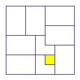

n is an odd integer. The squares of an n x n chessboard are colored alternately black and white, with the four corner squares black. A tromino is an L shape formed from three squares. For which n can the black squares all be covered by non-overlapping trominoes. What is the minimum number required?
Answer
Possible for n > 5. Need (n+1)2/4 trominos
Solution
Put n = 2m+1. There are (m + 1)2 black squares an even height above the bottom row (take the black squares in alternate rows, starting with an outside row). Any tromino can cover at most one, so at least (m + 1)2 trominos are needed. But for n = 3, 5 we have 3·(m + 1)2 > n2, so they must overlap.

For n = 7 we have the arrangement above using the minimum number of 42 trominos. The white square colored yellow above is uncovered. Every other square is covered by a tromino. Each 2 x 3 rectangle is covered with two trominos in the obvious way.
Now suppose we have tiled an n x n board with (n+1)2/4 trominos. We place a border two squares wide round two sides to convert it to an (n+2) x (n+2) board. The border can be regarded as an (n+2) x 2 rectangle and a 2 x n rectangle. Each of these rectangles can be divided into 2 x 2 squares and one 3 x 2 rectangle. The two black squares in each 2 x 2 rectangle can be covered with a single tromino, and the 3 x 2 rectangles can each be covered with two trominos. So we have a total of (n+1)2/4 + (n-1)/2 + 2 + (n-3)/2 + 2 = (n2 + 2n + 1 + 2n - 2 + 8 + 2n - 6 + 8)/4 = (n2 + 6n + 9)/4 = (n+3)2/4 trominos.

(C) John Scholes
jscholes@kalva.demon.co.uk
8 Aug 2003
Last corrected/updated 8 Aug 2003